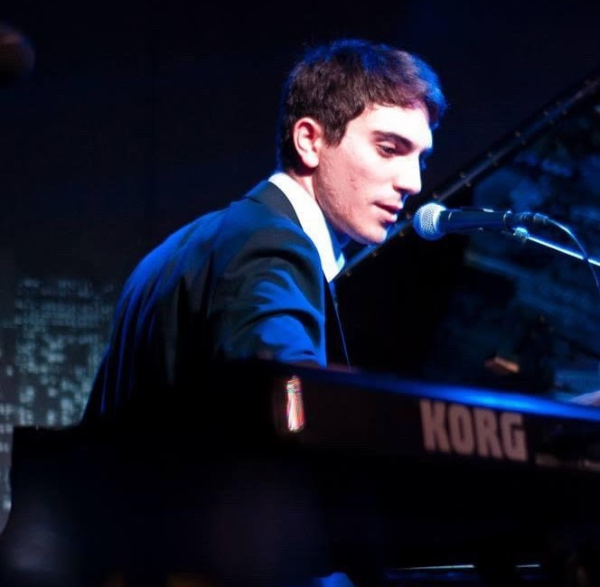
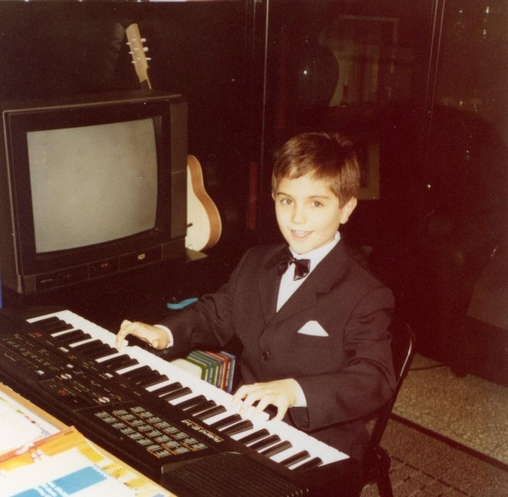
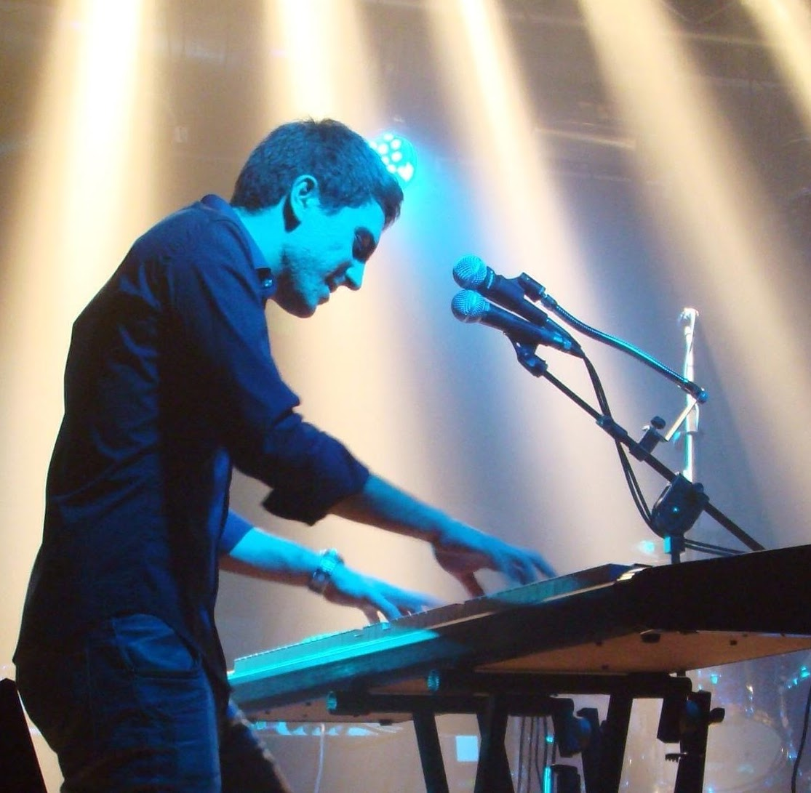
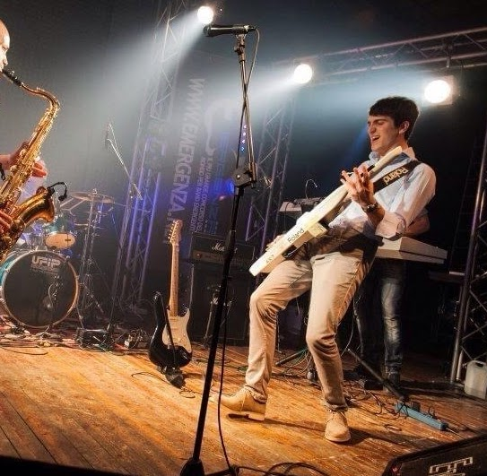

Mi chiamo Enrico Basso, sono nato nel 1989 a Torino e studio pianoforte dal 1997. La musica è entrata nella mia vita da bambino e non ne è più uscita.
Tra il 2006 e il 2014 ho suonato come tastierista in diverse band, muovendomi principalmente tra progressive rock e funk/soul. In quegli anni ho composto brani originali e ho calcato i palchi con oltre 150 concerti in Italia, Paesi Bassi e Germania — un'esperienza che mi ha formato come musicista e come persona.
Ho sempre avuto una profonda fascinazione per la musica da film, in particolare per i grandi maestri classici e neoclassici di Hollywood: Erich Korngold, John Williams, la tradizione sinfonica americana. Ma è solo negli ultimi anni che ho deciso di trasformare questa passione in una pratica concreta, dedicandomi alla composizione e orchestrazione per immagini.
Oggi partecipo a competizioni internazionali di film scoring per sviluppare ed affinare uno stile originale che sappia unire la tradizione sinfonica ad influenze più moderne.
Affronto ogni colonna sonora come un progetto, con una struttura, un arco narrativo, un obiettivo preciso. La musica racconta storie — e io voglio raccontarle bene.



